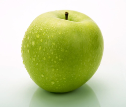
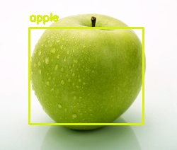
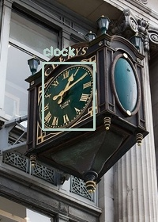
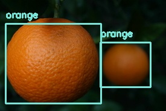
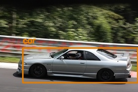
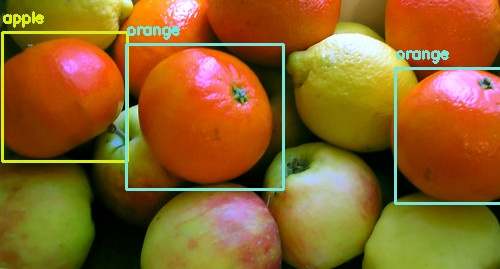
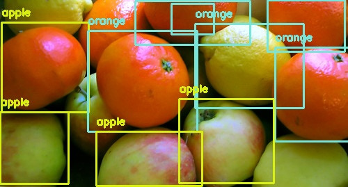
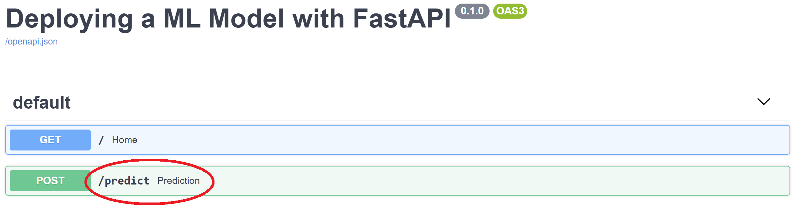
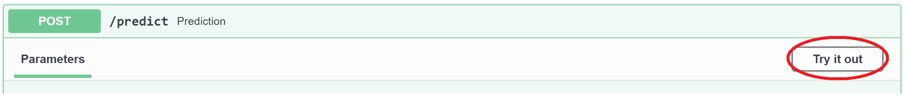
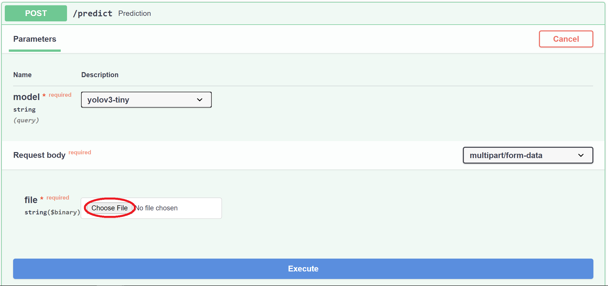

이 실습은 실제 머신 러닝 모델을 배포하고 그 결과를 확인하는 데 중점을 둡니다. 보다 구체적으로, 사진에서 일반적인 물체를 감지하도록 훈련된 컴퓨터 비전 모델을 배포합니다. 모델 배포는 일반적인 머신 러닝 라이프사이클의 마지막 단계 중 하나입니다. 이 실습에서는 사전 학습된 모델인 YOLOV3를 사용합니다.
이 실습에서 완료해야 할 단계/작업 순서는 다음과 같습니다: 1. 물체 감지에 사용되는 이미지 데이터 세트를 검사합니다. 2. 모델 자체를 살펴봅니다. 3. fastAPI를 사용하여 모델을 배포합니다. 해당 웹사이트 여기에서 확인할 수 있습니다.
YOLOV3를 활용한 객체 감지
이미지 확인하기
YOLOV3 모델에 전달될 이미지를 살펴봅시다. 이를 이미지에 대한 인사이트를 얻을 수 있습니다. 이 이미지들은 ImageNet 데이터 세트의 일부입니다.
from IPython.display import Image, display# Some example images
image_files = [
'apple.jpg',
'clock.jpg',
'oranges.jpg',
'car.jpg'
]
for image_file in image_files:
print(f"\nDisplaying image: {image_file}")
display(Image(filename=f"images/{image_file}"))Displaying image: apple.jpg
Displaying image: clock.jpg
Displaying image: oranges.jpg
Displaying image: car.jpg
모델 개요
이제 이미지 데이터와 존재하는 객체에 대해 이해했으므로 모델이 객체를 올바르게 감지하고 분류할 수 있는지 확인해 보겠습니다.
이를 위해 CVLIB를 사용할 텐데, 이는 매우 간단하지만 강력한 객체 감지 라이브러리로, OpenCV와 Tensorflow에 의해 구동됩니다.
좀 더 구체적으로, [numpy 배열(https://numpy.org/doc/stable/reference/generated/numpy.array.html)로 형식이 지정된 이미지를 받아 반환하는 detect_common_objects 함수를 사용할 것입니다:
bbox: 감지된 객체의 경계 상자 좌표가 포함된 목록 목록입니다.Example:[[32, 76, 128, 192], [130, 83, 220, 185]]label: 감지된 개체에 대한 레이블 목록입니다.Example:['apple', 'apple']conf: 감지된 객체에 대한 확률 점수입니다. Example:[0.6187325716018677, 0.42835739254951477]
detect_and_draw_box 함수 정의
입력 인자로 받는 detect_and_draw_box 함수를 정의해 보겠습니다:
- 시스템 내 파일의 파일명.
- 모델
- 신뢰 수준.
이러한 입력을 통해 이미지에서 일반적인 객체를 감지하고 감지된 객체와 함께 경계 상자를 표시하는 새 이미지를 저장합니다. 이 새 이미지는 images_with_boxes 디렉토리에 저장됩니다.
이 함수가 왜 모델을 입력 인수로 받는지 궁금할 수 있습니다. 어떤 모델을 선택할 수 있을까요? 정답은 detect_common_objects가 기본적으로 yolov3 모델을 사용한다는 것입니다. 그러나 훨씬 더 작고 계산 능력이 덜 필요한 다른 옵션이 있습니다.
바로 yolov3-tiny 버전입니다. 모델 이름에서 알 수 있듯이 이 모델은 큰 모델을 저장할 수 없는 제약된 환경을 위해 설계되었습니다. 따라서 전체 모델보다 결과가 덜 정확하다는 자연스러운 단점이 있습니다. 하지만 여전히 꽤 잘 작동합니다. 앞으로는 원하는 것을 사용할 수 있지만 기본적으로 yolov3-tiny가 사용됩니다.
모델 출력은 이미지에 다른 물체가 있는지 여부에 대한 확률 벡터입니다. 마지막 입력 인수인 신뢰 수준은 제공된 이미지에서 특정 물체가 감지되었다고 보고하기 위해 확률이 초과해야 하는 임계값을 결정합니다. 기본적으로 detect_common_objects는 이 값으로 0.5를 사용합니다.
import cv2
import cvlib as cv
from cvlib.object_detection import draw_bbox
def detect_and_draw_box(filename, model="yolov3-tiny", confidence=0.5):
"""Detects common objects on an image and creates a new image with bounding boxes.
Args:
filename (str): Filename of the image.
model (str): Either "yolov3" or "yolov3-tiny". Defaults to "yolov3-tiny".
confidence (float, optional): Desired confidence level. Defaults to 0.5.
"""
# Images are stored under the images/ directory
img_filepath = f'images/{filename}'
# Read the image into a numpy array
img = cv2.imread(img_filepath)
# Perform the object detection
bbox, label, conf = cv.detect_common_objects(img, confidence=confidence, model=model)
# Print current image's filename
print(f"========================\nImage processed: {filename}\n")
# Print detected objects with confidence level
for l, c in zip(label, conf):
print(f"Detected object: {l} with confidence level of {c}\n")
# Create a new image that includes the bounding boxes
output_image = draw_bbox(img, bbox, label, conf)
# Save the image in the directory images_with_boxes
cv2.imwrite(f'images_with_boxes/{filename}', output_image)
# Display the image with bounding boxes
display(Image(f'images_with_boxes/{filename}'))예제 이미지로 위 함수를 시험해봅시다.
for image_file in image_files:
detect_and_draw_box(image_file)========================
Image processed: apple.jpg
Detected object: apple with confidence level of 0.5717206597328186
========================
Image processed: clock.jpg
Detected object: clock with confidence level of 0.9683185815811157
========================
Image processed: oranges.jpg
Detected object: orange with confidence level of 0.6185590028762817
Detected object: orange with confidence level of 0.5561688542366028
========================
Image processed: car.jpg
Detected object: car with confidence level of 0.6325407028198242
신뢰 수준 변경해보기
물체 감지가 꽤 잘 된 것 같습니다. 여러 개의 물체가 포함된 좀 더 어려운 이미지에서 시도해 보겠습니다:
detect_and_draw_box("fruits.jpg")========================
Image processed: fruits.jpg
Detected object: apple with confidence level of 0.5818483829498291
Detected object: orange with confidence level of 0.5346481204032898
Detected object: orange with confidence level of 0.515099287033081
모델이 여러 과일을 감지하지 못하고 오렌지를 사과로 ’잘못 분류’했습니다. 이전에는 사과 하나를 감지할 수 있었기 때문에 모델이 사과의 모양을 공정하게 표현한다고 생각할 수 있습니다.
한 가지 가능성은 모델이 다른 과일을 감지했지만 신뢰 수준이 0.5보다 낮을 수 있다는 것입니다. 이것이 유효한 가설인지 테스트해 봅시다:
detect_and_draw_box("fruits.jpg", confidence=0.2)========================
Image processed: fruits.jpg
Detected object: apple with confidence level of 0.5818483829498291
Detected object: orange with confidence level of 0.5346481204032898
Detected object: orange with confidence level of 0.515099287033081
Detected object: apple with confidence level of 0.3475988507270813
Detected object: orange with confidence level of 0.3287608325481415
Detected object: apple with confidence level of 0.31244662404060364
Detected object: orange with confidence level of 0.2798607349395752
Detected object: orange with confidence level of 0.2749975323677063
Detected object: apple with confidence level of 0.2744506299495697
Detected object: orange with confidence level of 0.2141905575990677
신뢰 수준을 낮추면 모델은 대부분의 과일을 성공적으로 감지합니다. 그러나 존재하는 물체를 정확하게 감지하기 위해서는 신뢰 수준을 매우 낮게 설정해야 했습니다. 일반적으로 이러한 종류의 매개 변수를 변경하면 원하지 않는 결과가 나올 수 있으므로 이러한 종류의 매개 변수를 줄이거나 늘릴 때 주의해야 합니다.
오렌지를 사과로 잘못 분류한 이 구체적인 예는 이 모델이 완벽하지 않다는 것을 상기시켜 주며, 실제 업무에 사용할 때 이 점을 고려해야 합니다.
fastAPI를 사용하여 모델 배포하기
서버에 객체 감지 모델 배치하기
이제 모델이 어떻게 작동하는지 알았으니 이제 배포할 차례입니다!
배포에 들어가기 전에 몇 가지 중요한 개념과 이것이 어떻게 ’fastAPI’로 변환되는지 간단히 요약해 보겠습니다. 서버에 업로드된 이미지는 images_uploaded 디렉토리 내에서 사용됩니다.
import io
import uvicorn
import numpy as np
import nest_asyncio
from enum import Enum
from fastapi import FastAPI, UploadFile, File, HTTPException
from fastapi.responses import StreamingResponse# Assign an instance of the FastAPI class to the variable "app".
# You will interact with your api using this instance.
app = FastAPI(title='Deploying a ML Model with FastAPI')
# List available models using Enum for convenience. This is useful when the options are pre-defined.
class Model(str, Enum):
yolov3tiny = "yolov3-tiny"
yolov3 = "yolov3"
# By using @app.get("/") you are allowing the GET method to work for the / endpoint.
@app.get("/")
def home():
return "Congratulations! Your API is working as expected."
# This endpoint handles all the logic necessary for the object detection to work.
# It requires the desired model and the image in which to perform object detection.
@app.post("/predict")
def prediction(model: Model, file: UploadFile = File(...)):
# 1. VALIDATE INPUT FILE
filename = file.filename
fileExtension = filename.split(".")[-1] in ("jpg", "jpeg", "png")
if not fileExtension:
raise HTTPException(status_code=415, detail="Unsupported file provided.")
# 2. TRANSFORM RAW IMAGE INTO CV2 image
# Read image as a stream of bytes
image_stream = io.BytesIO(file.file.read())
# Start the stream from the beginning (position zero)
image_stream.seek(0)
# Write the stream of bytes into a numpy array
file_bytes = np.asarray(bytearray(image_stream.read()), dtype=np.uint8)
# Decode the numpy array as an image
image = cv2.imdecode(file_bytes, cv2.IMREAD_COLOR)
# 3. RUN OBJECT DETECTION MODEL
# Run object detection
bbox, label, conf = cv.detect_common_objects(image, model=model)
# Create image that includes bounding boxes and labels
output_image = draw_bbox(image, bbox, label, conf)
# Save it in a folder within the server
cv2.imwrite(f'images_uploaded/{filename}', output_image)
# 4. STREAM THE RESPONSE BACK TO THE CLIENT
# Open the saved image for reading in binary mode
file_image = open(f'images_uploaded/{filename}', mode="rb")
# Return the image as a stream specifying media type
return StreamingResponse(file_image, media_type="image/jpeg")다음 셀을 실행하면 서버가 스핀업됩니다!
그러면 커널을 수동으로 중단할 때까지 노트북이 차단됩니다(셀/코드를 실행할 수 없음). Kernel 탭을 클릭한 다음 Interrupt를 클릭하면 이 작업을 수행할 수 있습니다. ESC 키를 누르고 I 키를 두 번 눌러 Jupyter의 명령 모드로 들어갈 수도 있습니다.
# Allows the server to be run in this interactive environment
nest_asyncio.apply()
# This is an alias for localhost which means this particular machine
host = "127.0.0.1"
# Spin up the server!
uvicorn.run(app, host=host, port=8000, root_path="/serve")이제 서버가 실행되었습니다!
서비스 이용하기
http://127.0.0.1:8000/에 접속하여 서비스를 이용해봅시다.

Try it out 버튼을 클릭해봅시다.

모델 필드에서 모델을 선택하고 파일은 서버가 객체를 감지할 이미지여야 합니다.
파일 선택 버튼을 클릭하여 로컬 파일 시스템에서 이미지를 제출한 다음 파란색 실행 버튼을 클릭하여 서버에 HTTP 요청을 전송합니다. 그런 다음 아래로 스크롤하면 응답을 확인할 수 있습니다.
